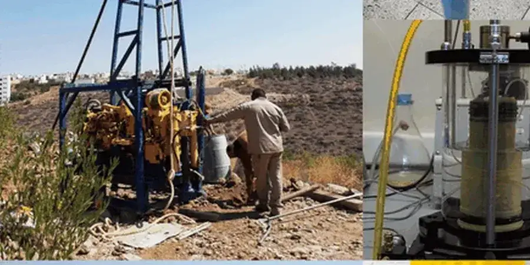

Delta, British Columbia, presents unique geotechnical challenges due to its low-lying Fraser River delta setting. Our firm offers comprehensive subsurface investigation, foundation design, and construction monitoring services tailored to this region. From site characterization for residential developments to large-scale industrial projects, we provide code-compliant solutions that address local soil behavior and groundwater conditions. Our integrated approach ensures safe and economical foundation systems, leveraging techniques such as soil classification and geotechnical excavation monitoring to manage risks effectively.

Methodology applied in Delta BC
Procedure video
Local geotechnical conditions in Delta BC
Our team brings consolidated regional experience from numerous projects across the Lower Mainland, including Delta’s industrial parks and residential subdivisions. We operate a calibrated laboratory for index and strength testing, ensuring data quality. Our reports comply with BC Building Code and municipal requirements, and we coordinate closely with local contractors and authorities like the Corporation of Delta and Metro Vancouver. This local familiarity allows us to anticipate subsurface conditions and streamline project approvals.
Our services
FAQ
What are the main geotechnical hazards in Delta BC?
Delta BC faces liquefaction risk in loose sands during seismic events, consolidation settlement in soft deltaic silts and peats, and potential for lateral spreading along the Fraser River front. Shallow groundwater can complicate excavations. Our site-specific assessments quantify these hazards and recommend mitigation measures such as ground improvement or deep foundations.
How deep do typical geotechnical investigations go in Delta?
Boreholes typically extend 10–30 m to penetrate through soft Holocene deposits into competent glacial till or older sediments. Depths depend on proposed loading and structure type—residential may require 10–15 m, while industrial or bridge projects often exceed 25 m. We also install piezometers to monitor groundwater fluctuations.
What building code governs geotechnical design in Delta BC?
Geotechnical design in Delta BC follows the British Columbia Building Code (BCBC 2024), which adopts the National Building Code of Canada (NBCC 2020). Seismic provisions are based on NBCC 2020 site-specific spectra, and foundation design references the Canadian Foundation Engineering Manual (CFEM). Local amendments may apply for floodplain areas.
Do you provide construction monitoring for Delta projects?
Yes, we offer full construction monitoring including observation of excavations, verification of compaction, and settlement monitoring using automated sensors. This ensures that subsurface conditions encountered match our design assumptions and that construction complies with approved geotechnical recommendations, reducing delays and liability.